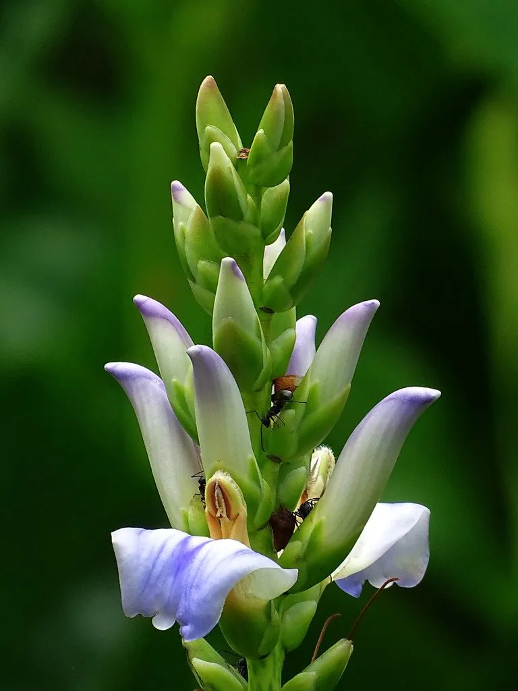

水生植物 · 植物界
老鼠簕 Acanthus ilicifolius

爵床科老鼠簕属常绿灌木，叶缘有刺齿、花蓝紫色，生于红树林边缘，是红树林伴生植物，全草可入药。
- 分类
- 门被子植物门纲木兰纲目唇形目科爵床科属老鼠簕属
- 栖息环境
- 热带、亚热带红树林边缘与潮间带高地，耐盐、耐湿
- 地理分布
- 亚洲南部、东南亚至澳大利亚北部，中国华南沿海常见
- 保护级别
- 暂无评估
物种志
老鼠簕为爵床科老鼠簕属的常绿灌木，高 0.5–2 米，茎直立，多分枝。叶片对生，革质，长圆形或披针形，长 8–20 厘米，边缘有尖锐的刺齿，形似老鼠的爪子。花蓝紫色或白色，穗状花序，花期夏季；果实为蒴果，种子肾形。
老鼠簕分布于亚洲南部、东南亚和澳大利亚北部的红树林边缘、潮间带高地和河岸，中国海南、广东、广西、福建等地常见，喜温暖、盐渍和湿润环境，耐盐、耐淹。它叶缘有刺齿、花蓝紫色，是红树林的伴生植物，常生长在林缘和高潮带；全草可入药，有清热解毒之效。栽培以扦插和分株繁殖为主，需在潮间带或盐渍地种植；红树林保护区内应注意避免采挖。
形态与习性
- 株高0.5–2 米，多分枝
- 叶片长圆形，边缘有尖锐刺齿
- 花期夏季，花蓝紫色或白色
- 耐盐耐盐、耐湿，生于潮间带高地
- 繁殖扦插、分株
- 主要用途全草入药，清热解毒
- 生态红树林伴生植物
- 注意保护区内不宜采挖
趣味知识
- 老鼠簕的叶缘有尖锐刺齿，形似老鼠爪子，因此得名。
- 它常生长在红树林边缘和高潮带，是红树林的伴生植物。
- 老鼠簕全草可入药，但红树林保护区内不宜采挖。